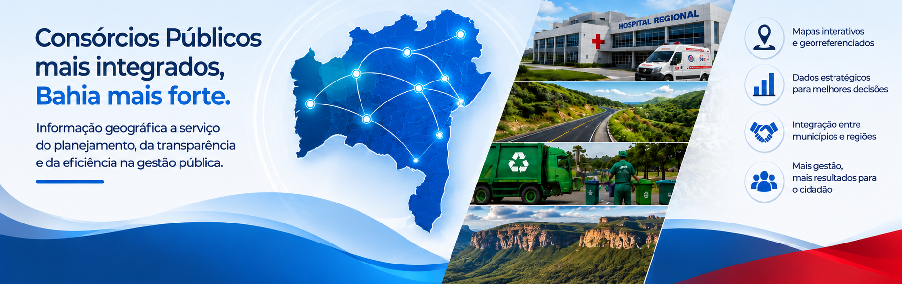

Informação geográfica a serviço do planejamento, da transparência e da eficiência na gestão pública.
Cada mapa apresenta as regiões coloridas por consórcio, com ficha técnica completa ao clicar em cada área.